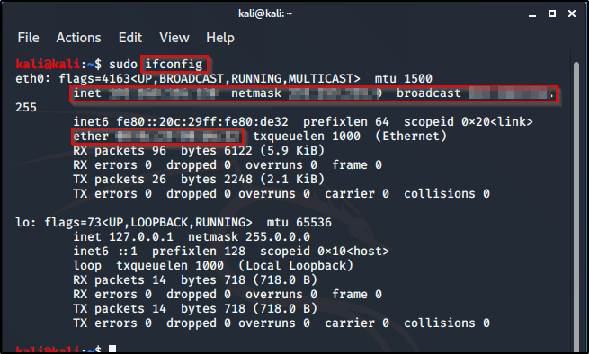

So the first basic command we'll cover is:
ifconfig (the pc version is ipconfig) - It shows your different interface types and the different IP adresses associatef with them.
In the image below, you can see eth0 IP address (inet), you could see the netmask, the broadcast, and even the MAC address (rther).

If your machine has a wireless adapter (which you'd need if you want to do wireless penetration testing at some point), you're going to need iwconfig command.
Another command is ping. In your terminal you type out the comand ping and the address yoou're trying to talk to. ping result is endless, until you kill the proce3ss with ctrl + c
If you ping a machine and don't get any replies, it's either the machine is not on the network or the machine is just blocking ICMP traffic. ICMP is another word for ping.
arp is another command, arp -a. arp is just going to show you IP addresses that it talks to and the MAC addresses associated with it. So arp is just a way of associating IP adresses with MAC adresses, and once you know that you can also look at netstat, which is our next command.
netstat -ano, would show you the active connections that are running on your machine. It shows, what's talking, what's open and this comes in handy in a pentest, tosee if a machine is talking with somebody else, same as arp. You want to know what the machine is associated with, if it's talking to something on a port.
The last basic command is route, it'll print you your routing table. The routing table is important because, it tells you where your traffic exits.